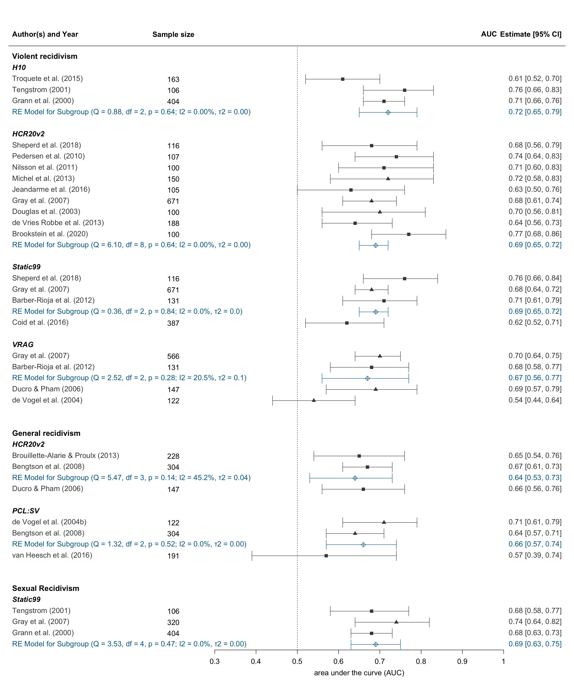
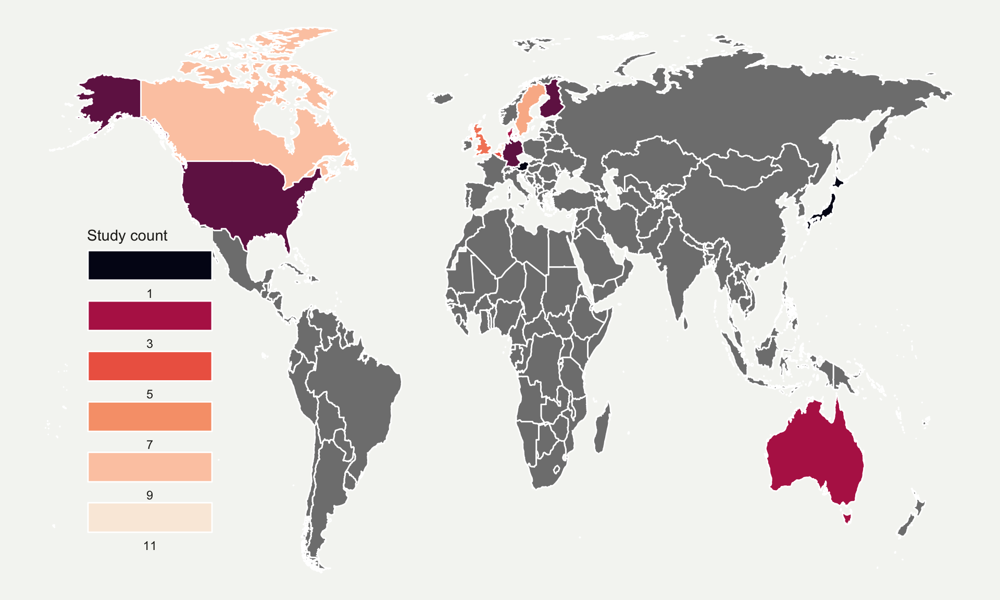
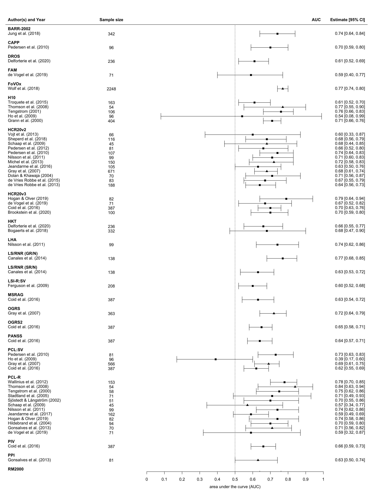
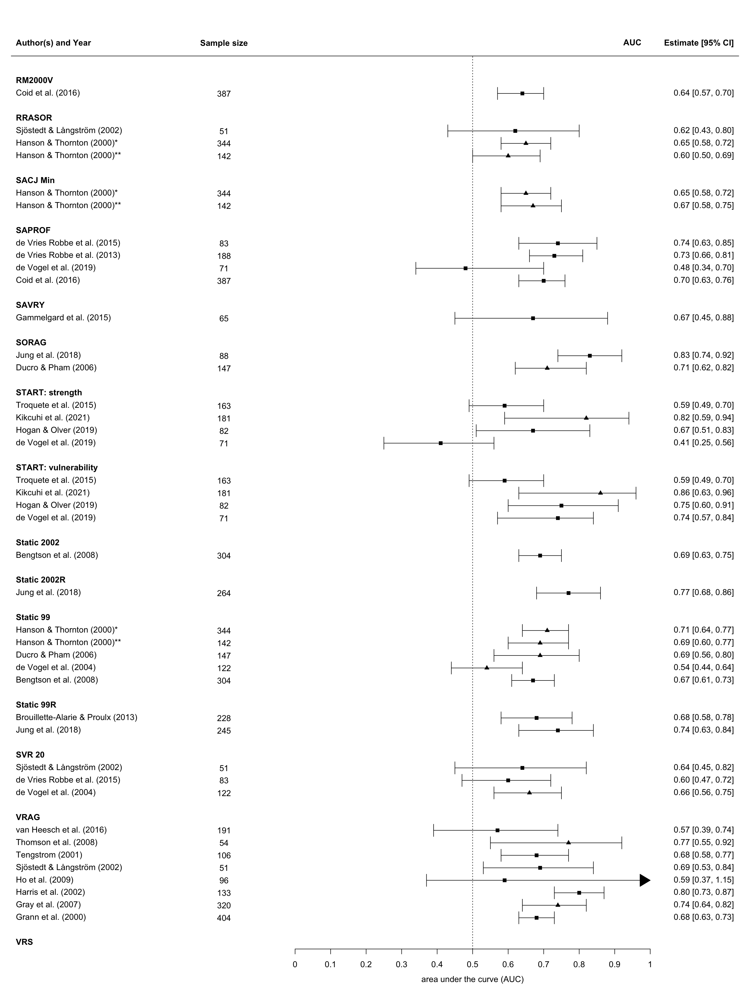
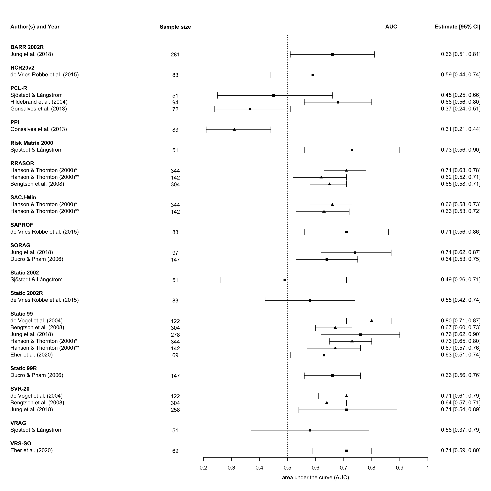
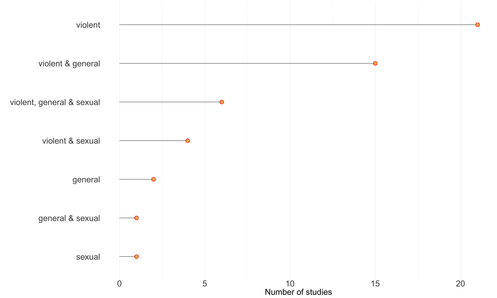

Show the code
if (!require("pacman")) install.packages("pacman")
library(pacman)
pacman::p_load(
tidyverse,
openxlsx,
metafor,
maps
)First load all necessary packages
if (!require("pacman")) install.packages("pacman")
library(pacman)
pacman::p_load(
tidyverse,
openxlsx,
metafor,
maps
)Load the extracted data
# data for the meta-analysis
data.violence <- read.xlsx("data.meta.all.xlsx")
data.violence <- arrange(data.violence, desc(data.violence$tool))
# data for the geographical map
world.data <- read.xlsx("worldcount.xlsx")
# violent recividivsm
data1 <- read.xlsx("data.violence1.xlsx")
data2 <- read.xlsx("data.violence2.xlsx")
# general recividivsm
data.general <- read.xlsx("data.general.xlsx")
# sexual recidivism
data.sexual<- read.xlsx("data.sexual.xlsx")
data.sexual <- arrange(data.sexual, desc(data.sexual$tool))When a tool had been validated at least three times for the outcome, we applied a random effects model, using the inverse-variance method, for pooling the logit transformation of the AUC and CIs. The predictive performance of each risk assessment instrument was pooled across all external validation studies regardless of study design (eg, including both retrospective and prospective cohort studies). To reduce bias, only independent validation studies with a sample size that is consistent with adequate statistical power were included in the primary analysis.
shapes = c(15, 17, 9)
shapes <- shapes[as.numeric(data.violence$group)]
colours = c("gray28", "gray28", "deepskyblue4")
colours <- colours[as.numeric(data.violence$group)]
forest(x = data.violence$auc, ci.lb = data.violence$auc.lower, ci.ub = data.violence$auc.upper,
slab = data.violence$`author(s).and.year`,
psize = rep(1, length(data.violence$auc)),
xlab = "area under the curve (AUC)", refline = 0.5,
ylim = c(-0.5, 56), xlim = c(-0.2, 1.15),
ilab = c(data.violence$samplesize), ilab.xpos = 0.2,
at = c(0.3, 0.4, 0.5, 0.6, 0.7, 0.8, 0.9, 1),
rows = c(0:3, 8:11, 14:17, 22:26, 29:33, 36:45, 48:51),
cex = 1.15, header = "Author(s) and Year",
pch = shapes, col = colours)
# add text to header ####
op <- par(cex=1.15, font=2)
text(0.2, 55, "Sample size")
text(0.965, 55.1, "AUC")
par(op)
op <- par(cex=1.15, font=4)
text(-0.2, c(4, 12, 18, 27, 34, 46, 52), pos = 4,
c("Static99", "PCL:SV", "HCR20v2", "VRAG", "Static99", "HCR20v2", "H10"))
par(op)
op <- par(cex=1.2, font=2)
text(-0.2, c(5, 19, 53), pos = 4,
c("Sexual Recidivism", "General recidivism", "Violent recidivism"))
## add notes ####
par(op)
op <- par(cex=1.0, font=2)
text(-.3, -0.5, pos = 4, cex = 1.0, paste("Note"))
par(op)
op <- par(cex=1.0, font=3)
text(-.3, -1.5, pos = 4, cex = .75, paste("Gray et al (2007)* includes the non-ID sample"))
Merge study count data
world_map <- map_data("world")
count.map <- left_join(world.data, world_map, by = "region")Geographical coverage of reviewed study samples using ggplot
ggplot(data = count.map, aes(x = long, y = lat, group = group))+
geom_polygon(aes(fill = study.count), colour = "white")+
theme_void()+
scale_fill_viridis_c(option = "rocket",
trans = "log", breaks=c(1, 3, 5, 7, 9, 11),
name ="Study count", guide = guide_legend(keyheight = unit(8, units = "mm"), keywidth = unit(32, "mm"), label.position = "bottom", title.position = 'top', nrow=6) ) +
theme(
text = element_text(color = "#22211d"),
plot.background = element_rect(fill = "#f5f5f2", color = NA),
panel.background = element_rect(fill = "#f5f5f2", color = NA),
legend.background = element_rect(fill = "#f5f5f2", color = NA),
legend.position = c(.15, 0.35),
plot.title = element_text(size= 40, hjust=0.01, color = "#4e4d47", margin = margin(b = 0.5, t = 0.4, l = 2, unit = "cm")),
plot.subtitle = element_text(size= 40, hjust=0.01, color = "#4e4d47", margin = margin(b = 0.5, t = 0.43, l = 2, unit = "cm"))
)
Area under the curve statistics for all validations for risk assessment tools used to predict violent recidivism (including non-independent and studies with small sample sizes)
shapes = c(15, 17)
shapes <- shapes[as.numeric(data1$group)]
forest(x = data1$auc, ci.lb = data1$auc.lb, ci.ub = data1$auc.ub,
slab = data1$`author(s).and.year`,
psize = rep(1, length(data1$auc)),
xlab = "area under the curve (AUC)", refline = 0.5,
ylim = c(0.5, 100), xlim = c(-0.8, 1.25),
ilab = c(data1$samplesize), ilab.xpos = -0.2,
at = c(0.0, 0.1, 0.2, 0.3, 0.4, 0.5, 0.6, 0.7, 0.8, 0.9, 1),
rows = c(0, 3, 6, 9:20, 23:26, 29, 32, 35, 38, 41, 44, 47, 50, 53:54, 57:61, 64:76, 79:83, 86, 89, 92, 95, 98),
cex = 1.0, header = "Author(s) and Year",
pch = shapes)
op <- par(cex=1.0, font=2)
text(-0.2, 99, "Sample size")
text(0.96, 99.1, "AUC")
par(op)
op <- par(cex=1.0, font=2)
text(-0.8, c(1, 4, 7, 21, 27,30, 33, 36, 39, 42, 45, 48, 51, 55, 61, 75, 82, 85, 88, 91, 94, 97), pos = 4,
c("RM2000", "PPI", "PIV", "PCL-R", "PCL:SV", "PANSS", "OGRS2", "OGRS", "MSRAG", "LSI-R:SV", "LS/RNR (SR/N)", "LS/RNR (GR/N)", "LHA", "HKT", "HCR20v3", "HCR20v2", "H10", "FoVOx", "FAM", "DROS", "CAPP", "BARR-2002"))
hapes = c(15, 17)
shapes <- shapes[as.numeric(data2$group)]
forest(x = data2$auc, ci.lb = data2$auc.lb, ci.ub = data2$auc.ub,
slab = data2$`author(s).and.year`,
psize = rep(1, length(data2$auc)),
xlab = "area under the curve (AUC)", refline = 0.5,
ylim = c(0.5, 74), xlim = c(-0.8, 1.25),
ilab = c(data2$samplesize), ilab.xpos = -0.2,
at = c(0.0, 0.1, 0.2, 0.3, 0.4, 0.5, 0.6, 0.7, 0.8, 0.9, 1),
rows = c(0, 3:10, 13:15, 18:19, 22:26, 29, 32, 35:38, 41:44, 47:48, 51, 54:57, 60:61, 64:66, 69),
cex = 1.0, header = "Author(s) and Year",
pch = shapes)
op <- par(cex=1.0, font=2)
text(-0.2, 73, "Sample size")
text(0.95, 73.1, "AUC")
par(op)
op <- par(cex=1.0, font=2)
text(-0.8, c(1, 11, 16, 20, 27, 30, 33, 39, 45, 49, 52, 58, 62, 67, 70), pos = 4,
c("VRS", "VRAG", "SVR 20", "Static 99R", "Static 99", "Static 2002R", "Static 2002", "START: vulnerability", "START: strength", "SORAG", "SAVRY", "SAPROF", "SACJ Min", "RRASOR", "RM2000V"))
Here we represent the different time-at-risk for each individual study. Studies with a follow-up duration of 12 months or less are coloured in red, studies with a follow-up time of between 1-5 years are coloured in blue, and studies with a follow-up duration of over 5 years are represented in grey.
Area under the curve statistics for all validations for risk assessment tools used to predict general recidivism
Area under the curve statistics for all validations for risk assessment tools used to predict sexual recidivism
shapes = c(15, 17)
shapes <- shapes[as.numeric(data.sexual$group)]
forest(x = data.sexual$auc, ci.lb = data.sexual$auc.lower, ci.ub = data.sexual$auc.upper,
slab = data.sexual$`author(s).and.year`,
psize = rep(1, length(data.sexual$auc)),
xlab = "area under the curve (AUC)", refline = 0.5,
ylim = c(2, 66), xlim = c(-.5, 1.2),
ilab = c(data.sexual$samplesize), ilab.xpos = 0.1,
at = c(0.2, 0.3, 0.4, 0.5, 0.6, 0.7, 0.8, 0.9, 1),
rows = c(3, 6, 9:11, 14, 17:22, 25, 28, 31:32, 35, 38:39, 42:44, 47, 50, 53:55, 58, 61),
cex = 1.0, header = "Author(s) and Year",
pch = shapes)
op <- par(cex=1.0, font=2)
text(0.1, 65, "Sample size")
text(0.87, 65.1, "AUC")
par(op)
op <- par(cex=1.0, font=2)
text(-.5, c(4, 7, 12, 15, 23, 26, 29, 33, 36, 40, 45, 48, 51, 56, 59, 62), pos = 4,
c("VRS-SO", "VRAG", "SVR-20", "Static 99R", "Static 99", "Static 2002R", "Static 2002", "SORAG", "SAPROF", "SACJ-Min", "RRASOR", "Risk Matrix 2000", "PPI", "PCL-R", "HCR20v2", "BARR 2002R"))
x = c("violent", "general", "sexual", "violent & general", "violent & sexual", "general & sexual", "violent, general & sexual")
y = c(21, 2, 1, 15, 4, 1, 6)
data <- data.frame(x, y)
data %>%
arrange(y) %>%
mutate(x = factor(x, levels = x)) %>%
ggplot( aes(x=x, y=y)) +
geom_segment( aes(x=x, xend=x, y=0, yend=y)) +
geom_point(size=5, color="red", fill=alpha("orange", 0.3), alpha=0.7, shape=21, stroke=2) +
coord_flip() +
theme_light() +
theme(
axis.text=element_text(size=30),
axis.title=element_text(size=30),
panel.grid.major.y = element_blank(),
panel.border = element_blank(),
axis.ticks.x = element_blank()) +
xlab("") +
ylab("Number of studies")